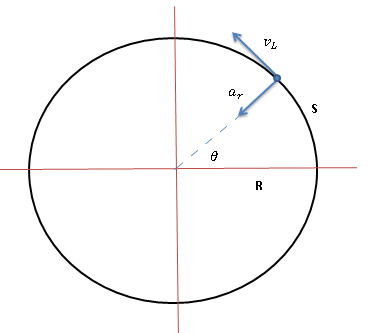
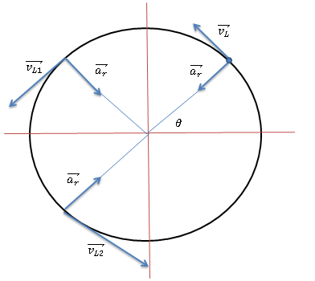
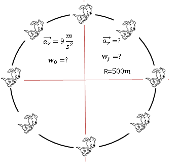

Hemos visto movimientos rectos y parabolicos donde suceden cosas interesantes con los vectores velocidad y la ecuacion de posicion, en este caso el protagonista de la pelicula es la aceleracion. Hemos visto que por lo general es un solo vector que representa el cambio de la velocidad en ciertos tramos de desplazamiento, sin embargo esta compuesto de dos componentes principales:
`veca` = at`hatt` - `ar`hatr`
Donde:
ar`hatr`: Es conocido como la Aceleracion Radial.
Es la componente radial de la aceleracion que representa el cambio de direccion, generalmente hemos visto que la aceleracion nos indicaba el cambio en la magnitud de la velocidad, pero quien era responsable era la componente tangencial de la aceleracion. Sus unidades son los metros/segundos (`m/s^2`).
ar = `v^2/R` = `omega^2 * R`

Figura 1: Aceleracion Radial.
at`hatt`: Es conocido como la Aceleracion Tangencial.
Es la componente tangencial de la aceleracion que representa el cambio en la magnitud, basicamente es la misma que vimos en el M.R.U.A, solo que en ese caso la aceleracion radial era cero. En este caso podemos observar que vL varia en tamaño lo cual indica la existencia de esta componente de la aceleracion que produce lo que se conoce como un Movimiento Circular Uniforme Acelerado. Sus unidades son los metros/segundos (`m/s^2`).
at = `alpha`*R

Figura 1: Aceleracion Tangencial.
Antes de seguir necesitamos revisar algunos conceptos:
Posicion Angular: La posición angular `theta` representa el ángulo que forma en cada momento el vector de posición de un cuerpo con el semieje X positivo. Su unidad en el Sistema Internacional de Unidades (S.I.) es el radián (rad).
`thetaf = thetao +omegao*t + (1/2)*alpha*t^2`
Desplazamiento Angular: El desplazamiento angular (`Delta``theta`) representa el ángulo recorrido. Viene dado por la diferencia entre una posición angular final `theta`f y una posición angular inicial `theta`i:
`Delta``theta` = `theta`f - `theta`i
Velocidad Angular: Representa el desplazamiento angular (`Delta``theta`) experimentado por un cuerpo en cada segundo. Su unidad en el Sistema Internacional de Unidades (S.I.) es el radian/segundos (rad/s) aunque en ocasiones vera que se puede utilizar también las revoluciones o vueltas por minuto, r.p.m. (1 r.p.m. = 2π/60 rad/s). Al igual que sucedía con la velocidad, existe la velocidad angular media ωm y la velocidad angular instantánea ω (o simplemente velocidad angular) según se considere un intervalo de tiempo Δt o un instante de tiempo respectivamente dt.
`omega`m = `frac{Deltatheta}{Deltat}` = `frac{thetaf - thetao}{tf - t0}`
`omega` = `frac{d theta}{dt}`
`omegaf^2 = omegao^2 +- 2*alpha*(thetaf - theta0)`
`omega = 2*pi*f`
`omegaf = omegao + alpha*t`
Aceleracion Angular: Representa la variación de velocidad angular (Δω) respecto del tiempo. Su unidad en el Sistema Internacional de Unidades (S.I.) es el rad⁄`s^2`. Al igual que sucedía con las magnitudes lineales equivalentes, existe la aceleración angular media αm y la aceleración angular instantánea α (o simplemente aceleración angular) según se considere un intervalo de tiempo Δt o un instante de tiempo respectivamente dt.
`a`m = `frac{Delta omega}{Deltat}` = `frac{omegaf - omegao}{tf - t0}`
`alpha` = `frac{d omega}{dt}`
Distancia Recorrida: O conocido como longitud de arco, es la distancia recorrida en metros por un objeto que experimenta un movimiento circular.
S = `R*theta`
Velocidad Lineal: Es la velocidad que conociamos del Movimiento Rectilineo, sus unidades con los metros/segundos (`m/s^2`), es un vector tangente a la distancia recorrida S.
vL = `omega*R`
Periodo: Se trata del tiempo que tarda el cuerpo en cumplir un ciclo o en este caso dar una vuelta completa. Se representa por T y se mide en segundos (s). Su expresión viene dada por:
`thetaf - thetao = omegao*t`
`T = 2*pi/omega`
Frecuencia: Se trata del número de ciclos por segundo. Se representa por f y se mide en la inversa del segundo (1/s) , que también se denomina hercio (Hz). Su expresión viene dada por:
`f = omega/(2*pi)`
`f = 1/T`
Movimiento Circular Uniforme
El movimiento circular uniforme (MCU) es un movimiento de trayectoria circular en el que la velocidad angular es constante. Esto implica que describe ángulos iguales en tiempos iguales. En él, el vector velocidad no cambia de módulo pero sí de dirección (es tangente en cada punto a la trayectoria). Esto quiere decir que no tiene aceleración tangencial ni aceleración angular, aunque sí aceleración normal. Sus principales caracteristicas son:
La velocidad angular es constante (ω = cte).
El vector velocidad es tangente en cada punto a la trayectoria y su sentido es el del movimiento. Esto implica que el movimiento cuenta con aceleración normal.
Tanto la aceleración angular (α) como la aceleración tangencial (at) son nulas, ya que la rapidez (módulo del vector velocidad) es constante.
Existe un periodo (T), que es el tiempo que el cuerpo emplea en dar una vuelta completa. Esto implica que las características del movimiento son las mismas cada T segundos. La expresión para el cálculo del periodo es T=2π/ω y es sólo válida en el caso de los movimientos circulares uniformes (MCU).
Existe una frecuencia (f), que es el número de vueltas que da el cuerpo en un segundo. Su valor es el inverso del periodo.
Movimiento Circular Uniforme Acelerado
Hasta ahora hemos visto un tema bastante grueso en cuanto a teoria comparado a los otros, en este apartado despertaremos a Skippy que estuvo tomando una siesta. El se encontraba en un arbol cuando de repente se levanta y comienza a perseguir su cola alrededor del arbol dando vueltas en un circulo una y otra vez con velocidad constante y aceleracion radial de 9 `m/s^2`. Durante el todo el recorrido se mantiene un radio R con respecto al arbol de 20 metros.

Figura 1: Ejercicio de Movimiento Circular.
Skippy aumenta su velocidad tres veces pensando que eso lo ayudara a morderse su cola, que sucede con la aceleracion radial del el? Si es " ar = `v^2/R` ", entonces su aceleracion radial aumenta 9 veces!
Ahora Skippy aumenta su rapidez a razon de 2`m/s^2`, cual sera su aceleracion total despues de tres segundos?
Comienza a ponerse interesante la cosa, como vimos la aceleracion total viene dado por `veca` = at`hatt` - `ar`hatr`, pero que significan esos 2`m/s^2`? Su aceleracion tangencial porque es la responsable de modificar la rapidez, el hecho de que Skippy se mueva para nuestra perspectiva, mas rapido, quiere decir que entra en efecto la componente tangencial de la aceleracion, entonces solo nos queda obtener la aceleracion radial:
ar = `v^2/R` = `omega^2 * R`
Solo tenemos el radio, la aceleracion radial (antes de acelerar), la aceleracion tangencial y el tiempo, no tenemos ni la velocidad lineal ni la velocidad angular, que podemos hacer ahora? Con la aceleracion tangencial podemos obtener la aceleracion angular.
at = `alpha`*R
`alpha` = at/R
`alpha` = `2/20 (rad)/s^2` `alpha` = `0,1 (rad)/s^2`
Con la aceleracion angular podemos buscar entre todas las formulas cuales podemos usar para seguir indagando sobre la aceleracion total con la que Skippy persigue su cola despues de tres segundos:
`omegaf^2 = omegao^2 +- 2*alpha*(thetaf - theta0)`
`thetaf = thetao +omegao*t + (1/2)*alpha*t^2`
`omegaf = omegao + alpha*t`
Antes habiamos dicho que si un objeto acelera desde el reposo su velocidad inicial es cero, pero en este caso Skippy ya venia con una velocidad angular inicial.
ar = `omega^2 * R`
`omegao` = `sqrt(ar/R)`
`omega0` = `sqrt(9/20) (rad)/s` `omega0` = 0,67 rad/s
Con esto podemos obtener la aceleracion radial de Skippy luego de tres segundos al acelerar.
ar = `omegaf^2 * R`
ar = `(0,97 rad/s)^2 * 20 m/s^2`
ar = `18,18 m/s^2`
Finalmente obtenemos que la aceleracion total de Skippy es de 18,92 `m/s^2`. Una de las cosas interesantes de este caso, es que la aceleracion radial depende de la velocidad angular, entonces esos 9 `m/s^2` no se mantenian de manera constante, sino modificaban su valor cuando la velocidad angular cambiaba debido a la existencia de una aceleracion angular que vino de la aceleracion tangencial cuando Skippy comenzo a acelerar para perseguir su cola.